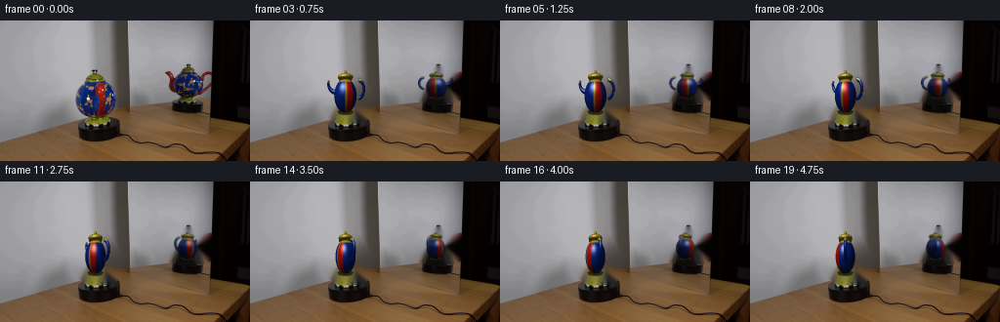
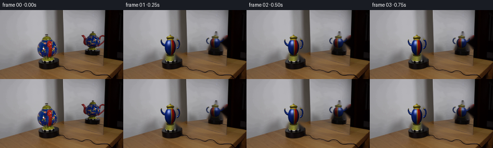
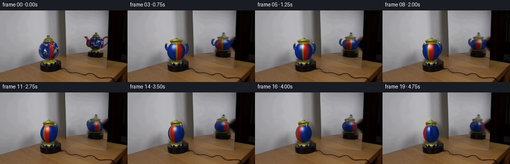
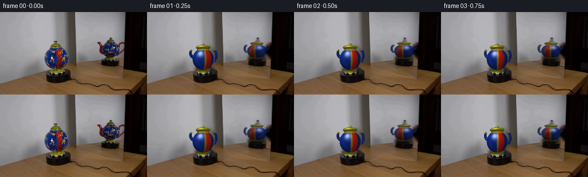
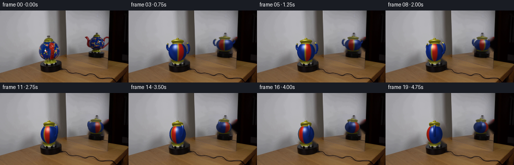
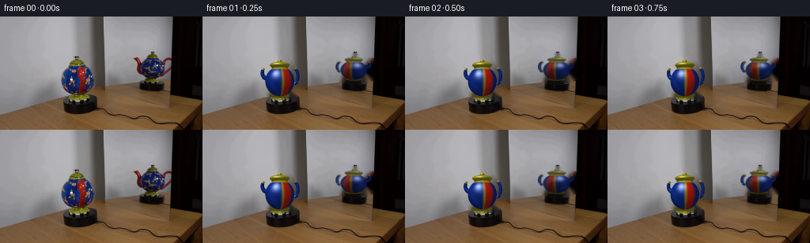
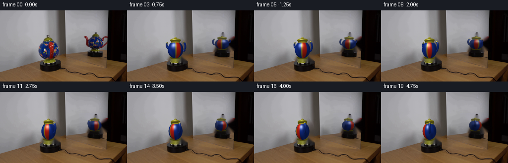
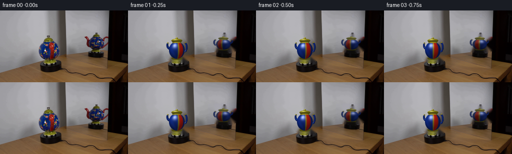

CODING AGENTS AS PIXEL WORLD MODELS
traex/DeepSeek-V4.1-Flash · 0123
点击播放 · 原生 RGB 像素
逐轮保存的候选
回放视频、检查图与代码变化。
每份候选均可单独播放。实际图片检查记录在下方工具轨迹中。
候选 01播放与检查图
点击播放 · 原生 RGB 像素


展开代码变化
--- 上一保存版本
+++ 本次保存版本
@@ -0,0 +1,423 @@
+from pathlib import Path
+
+import cv2
+import numpy as np
+from PIL import Image
+
+import artifact_io
+
+
+ROOT = Path(__file__).resolve().parent
+W, H, N, FPS = 256, 144, 20, 4
+SUPERSAMPLE = 3
+
+
+def _unit(v):
+ v = np.asarray(v, dtype=np.float64)
+ return v / np.maximum(np.linalg.norm(v, axis=-1, keepdims=True), 1e-9)
+
+
+class Mesh:
+ def __init__(self):
+ self.vertices = []
+ self.normals = []
+ self.colors = []
+ self.faces = []
+
+ def add(self, vertices, normals, colors, faces):
+ offset = len(self.vertices)
+ self.vertices.extend(np.asarray(vertices, dtype=np.float64))
+ self.normals.extend(np.asarray(normals, dtype=np.float64))
+ self.colors.extend(np.asarray(colors, dtype=np.float64))
+ self.faces.extend(np.asarray(faces, dtype=np.int32).reshape(-1, 3) + offset)
+
+ def arrays(self):
+ return (
+ np.asarray(self.vertices, dtype=np.float64),
+ np.asarray(self.normals, dtype=np.float64),
+ np.asarray(self.colors, dtype=np.float64),
+ np.asarray(self.faces, dtype=np.int32),
+ )
+
+
+def _grid_faces(nu, nv, wrap_u=True, flip=False):
+ faces = []
+ for j in range(nv - 1):
+ for i in range(nu - 1 if not wrap_u else nu):
+ i2 = (i + 1) % nu
+ a = j * nu + i
+ b = j * nu + i2
+ c = (j + 1) * nu + i2
+ d = (j + 1) * nu + i
+ if flip:
+ faces.extend([(a, c, b), (a, d, c)])
+ else:
+ faces.extend([(a, b, c), (a, c, d)])
+ return faces
+
+
+def _ellipsoid(center, radii, nu=40, nv=20, material="blue"):
+ vertices, normals, colors, faces = [], [], [], []
+ cx, cy, cz = center
+ rx, ry, rz = radii
+ for j in range(nv):
+ phi = np.pi * j / (nv - 1)
+ sp, cp = np.sin(phi), np.cos(phi)
+ for i in range(nu):
+ theta = 2.0 * np.pi * i / nu
+ x = rx * sp * np.cos(theta)
+ y = ry * cp
+ z = rz * sp * np.sin(theta)
+ vertices.append((cx + x, cy + y, cz + z))
+ normals.append(_unit((x / (rx * rx), y / (ry * ry), z / (rz * rz))))
+ colors.append(_body_color((cx + x, cy + y, cz + z), material))
+ faces.extend(_grid_faces(nu, nv, wrap_u=True))
+ return vertices, normals, colors, faces
+
+
+def _cylinder(y0, y1, r0, r1, center=(0.0, 0.0, 0.0), nu=32, material="blue", caps=True):
+ vertices, normals, colors, faces = [], [], [], []
+ cx, cy, cz = center
+ slope = (r0 - r1) / max(y1 - y0, 1e-6)
+ for y, r in ((y0, r0), (y1, r1)):
+ for i in range(nu):
+ theta = 2.0 * np.pi * i / nu
+ vertices.append((cx + r * np.cos(theta), cy + y, cz + r * np.sin(theta)))
+ normals.append(_unit((np.cos(theta), slope, np.sin(theta))))
+ colors.append(_body_color(vertices[-1], material))
+ for i in range(nu):
+ i2 = (i + 1) % nu
+ faces.extend([(i, i2, nu + i2), (i, nu + i2, nu + i)])
+ if caps:
+ for y, r, sign, row in ((y0, r0, -1.0, 0), (y1, r1, 1.0, 1)):
+ center_index = len(vertices)
+ vertices.append((cx, cy + y, cz))
+ normals.append((0.0, sign, 0.0))
+ colors.append(_body_color(vertices[-1], material))
+ ring = row * nu
+ for i in range(nu):
+ i2 = (i + 1) % nu
+ if sign < 0:
+ faces.append((center_index, ring + i2, ring + i))
+ else:
+ faces.append((center_index, ring + i, ring + i2))
+ return vertices, normals, colors, faces
+
+
+def _sphere(center, radius, material="gold", nu=20, nv=12):
+ return _ellipsoid(center, (radius, radius, radius), nu=nu, nv=nv, material=material)
+
+
+def _tube(points, radii, nu=14, material="blue", tip_band=0.0):
+ points = np.asarray(points, dtype=np.float64)
+ radii = np.asarray(radii, dtype=np.float64)
+ vertices, normals, colors, faces = [], [], [], []
+ count = len(points)
+ for k, (p, radius) in enumerate(zip(points, radii)):
+ tangent = points[min(k + 1, count - 1)] - points[max(k - 1, 0)]
+ tangent = _unit(tangent)
+ helper = np.array((0.0, 1.0, 0.0))
+ if abs(np.dot(tangent, helper)) > 0.92:
+ helper = np.array((1.0, 0.0, 0.0))
+ b1 = _unit(np.cross(tangent, helper))
+ b2 = _unit(np.cross(tangent, b1))
+ for i in range(nu):
+ theta = 2.0 * np.pi * i / nu
+ normal = b1 * np.cos(theta) + b2 * np.sin(theta)
+ vertices.append(p + radius * normal)
+ normals.append(normal)
+ frac = k / max(count - 1, 1)
+ mat = "gold" if tip_band and frac >= 1.0 - tip_band else material
+ colors.append(_body_color(vertices[-1], mat))
+ faces.extend(_grid_faces(nu, count, wrap_u=True))
+ for end, sign in ((0, -1), (count - 1, 1)):
+ center_index = len(vertices)
+ vertices.append(points[end])
+ tangent = _unit(points[end] - points[end + sign if 0 <= end + sign < count else end])
+ normals.append(tangent)
+ colors.append(_body_color(points[end], "dark"))
+ ring = end * nu
+ for i in range(nu):
+ i2 = (i + 1) % nu
+ if end == 0:
+ faces.append((center_index, ring + i2, ring + i))
+ else:
+ faces.append((center_index, ring + i, ring + i2))
+ return vertices, normals, colors, faces
+
+
+def _bezier(p0, p1, p2, p3, count=18):
+ t = np.linspace(0.0, 1.0, count)[:, None]
+ p0, p1, p2, p3 = map(np.asarray, (p0, p1, p2, p3))
+ return (
+ (1 - t) ** 3 * p0
+ + 3 * (1 - t) ** 2 * t * p1
+ + 3 * (1 - t) * t**2 * p2
+ + t**3 * p3
+ )
+
+
+def _body_color(p, material):
+ x, y, z = p
+ if material == "gold":
+ return np.array((0.58, 0.51, 0.12))
+ if material == "dark":
+ return np.array((0.035, 0.028, 0.025))
+ if material == "red":
+ return np.array((0.58, 0.055, 0.035))
+ angle = np.arctan2(x, -z)
+ if material == "blue":
+ if y > 0.79:
+ return np.array((0.60, 0.52, 0.12))
+ band = abs(angle - 0.66)
+ if band < 0.27:
+ return np.array((0.60, 0.055, 0.032))
+ if band < 0.34:
+ return np.array((0.56, 0.48, 0.11))
+ glaze = 0.92 + 0.08 * np.sin(7.0 * angle + 4.0 * y)
+ return np.array((0.028, 0.13, 0.48)) * glaze
+ return np.array((0.04, 0.12, 0.42))
+
+
+def build_teapot():
+ mesh = Mesh()
+ for primitive in (
+ _ellipsoid((0.0, -0.04, 0.0), (0.94, 1.02, 0.82), nu=44, nv=22),
+ _cylinder(-1.10, -0.96, 0.57, 0.67, material="gold"),
+ _cylinder(0.84, 1.04, 0.52, 0.57, material="gold"),
+ _ellipsoid((0.0, 1.07, 0.0), (0.66, 0.22, 0.57), nu=32, nv=12, material="gold"),
+ _sphere((0.0, 1.31, 0.0), 0.15, material="gold"),
+ ):
+ mesh.add(*primitive)
+
+ spout_path = _bezier(
+ (-0.78, 0.18, 0.08),
+ (-1.36, 0.12, 0.08),
+ (-1.75, 0.62, 0.10),
+ (-1.55, 0.91, 0.12),
+ count=20,
+ )
+ spout_radii = np.linspace(0.17, 0.095, len(spout_path))
+ mesh.add(*_tube(spout_path, spout_radii, nu=14, material="blue", tip_band=0.12))
+
+ angles = np.linspace(np.deg2rad(-78), np.deg2rad(78), 22)
+ handle_path = np.column_stack(
+ (
+ 1.00 + 0.54 * np.cos(angles),
+ 0.33 + 0.55 * np.sin(angles),
+ np.full_like(angles, 0.03),
+ )
+ )
+ handle_radii = np.linspace(0.105, 0.105, len(handle_path))
+ mesh.add(*_tube(handle_path, handle_radii, nu=12, material="blue", tip_band=0.08))
+ return mesh.arrays()
+
+
+def rotation_y(angle):
+ c, s = np.cos(angle), np.sin(angle)
+ return np.array(((c, 0.0, s), (0.0, 1.0, 0.0), (-s, 0.0, c)))
+
+
+def render_teapot(mesh, angle):
+ vertices, normals, colors, faces = mesh
+ rot = rotation_y(angle)
+ world = vertices @ rot.T
+ world_normals = normals @ rot.T
+
+ s = SUPERSAMPLE
+ width, height = W * s, H * s
+ cx, cy = 97.5 * s, 76.2 * s
+ sx, sy = 12.15 * s, 17.15 * s
+ camera_depth = 8.0
+ denom = camera_depth + world[:, 2]
+ projected = np.column_stack(
+ (
+ cx + sx * world[:, 0] * camera_depth / denom,
+ cy - sy * world[:, 1] * camera_depth / denom,
+ )
+ )
+
+ light = _unit((-0.48, 0.82, -0.58))
+ half_vector = _unit(light + np.array((0.0, 0.0, -1.0)))
+ diffuse = np.maximum(world_normals @ light, 0.0)
+ specular = np.maximum(world_normals @ half_vector, 0.0) ** 34.0
+ shaded = np.clip(
+ colors * (0.31 + 0.80 * diffuse[:, None])
+ + 0.68 * specular[:, None] * np.array((1.0, 0.98, 0.92)),
+ 0.0,
+ 1.0,
+ )
+
+ rgb_buffer = np.zeros((height, width, 3), dtype=np.float64)
+ depth_buffer = np.full((height, width), np.inf, dtype=np.float64)
+ coverage = np.zeros((height, width), dtype=np.uint8)
+
+ for face in faces:
+ p = projected[face]
+ min_x = max(int(np.floor(p[:, 0].min())), 0)
+ max_x = min(int(np.ceil(p[:, 0].max())) + 1, width)
+ min_y = max(int(np.floor(p[:, 1].min())), 0)
+ max_y = min(int(np.ceil(p[:, 1].max())) + 1, height)
+ if min_x >= max_x or min_y >= max_y:
+ continue
+
+ face_center = world[face].mean(axis=0)
+ face_normal = np.cross(world[face[1]] - world[face[0]], world[face[2]] - world[face[0]])
+ if np.dot(face_normal, np.array((0.0, 0.0, -camera_depth)) - face_center) <= 0:
+ continue
+
+ x0, y0 = p[0]
+ x1, y1 = p[1]
+ x2, y2 = p[2]
+ area = (x1 - x0) * (y2 - y0) - (x2 - x0) * (y1 - y0)
+ if abs(area) < 1e-8:
+ continue
+ yy, xx = np.mgrid[min_y:max_y, min_x:max_x]
+ w0 = ((x1 - xx) * (y2 - yy) - (x2 - xx) * (y1 - yy)) / area
+ w1 = ((x2 - xx) * (y0 - yy) - (x0 - xx) * (y2 - yy)) / area
+ w2 = 1.0 - w0 - w1
+ inside = (w0 >= -0.002) & (w1 >= -0.002) & (w2 >= -0.002)
+ if not np.any(inside):
+ continue
+ z = w0 * denom[face[0]] + w1 * denom[face[1]] + w2 * denom[face[2]]
+ old_depth = depth_buffer[min_y:max_y, min_x:max_x]
+ update = inside & (z < old_depth)
+ if not np.any(update):
+ continue
+ face_colors = shaded[face]
+ color = (
+ w0[..., None] * face_colors[0]
+ + w1[..., None] * face_colors[1]
+ + w2[..., None] * face_colors[2]
+ )
+ depth_slice = depth_buffer[min_y:max_y, min_x:max_x]
+ rgb_slice = rgb_buffer[min_y:max_y, min_x:max_x]
+ depth_slice[update] = z[update]
+ rgb_slice[update] = color[update]
+ coverage[min_y:max_y, min_x:max_x][update] = 255
+
+ rgb_small = cv2.resize(rgb_buffer, (W, H), interpolation=cv2.INTER_AREA)
+ alpha_small = cv2.resize(coverage.astype(np.float32) / 255.0, (W, H), interpolation=cv2.INTER_AREA)
+ return np.clip(rgb_small * 255.0 + 0.5, 0, 255).astype(np.uint8), np.clip(alpha_small, 0, 1)
+
+
+def make_clean_plate(first):
+ main_poly = np.array(
+ [
+ (94, 49), (108, 52), (115, 63), (120, 76), (121, 91),
+ (118, 101), (109, 104), (98, 103), (88, 101), (80, 99),
+ (75, 90), (76, 77), (80, 66), (87, 56),
+ ],
+ dtype=np.int32,
+ )
+ mirror_poly = np.array(
+ [
+ (168, 47), (201, 47), (210, 50), (217, 58), (217, 78),
+ (210, 83), (190, 84), (174, 82), (167, 75), (165, 63), (166, 54),
+ ],
+ dtype=np.int32,
+ )
+ mask = np.zeros((H, W), dtype=np.uint8)
+ cv2.fillPoly(mask, [main_poly], 255)
+ cv2.fillPoly(mask, [mirror_poly], 255)
+ mask = cv2.dilate(mask, np.ones((3, 3), np.uint8), iterations=1)
+ clean = cv2.inpaint(first, mask, 4, cv2.INPAINT_TELEA)
+ return clean
+
+
+def composite_rgba(base, rgb, alpha, center=None, scale=(1.0, 1.0), flip=False, tint=None, opacity=1.0):
+ ys, xs = np.where(alpha > 0.02)
+ if len(xs) == 0:
+ return base
+ x0, x1 = xs.min(), xs.max() + 1
+ y0, y1 = ys.min(), ys.max() + 1
+ crop_rgb = rgb[y0:y1, x0:x1]
+ crop_a = alpha[y0:y1, x0:x1]
+ if flip:
+ crop_rgb = crop_rgb[:, ::-1]
+ crop_a = crop_a[:, ::-1]
+ new_w = max(1, int(round((x1 - x0) * scale[0])))
+ new_h = max(1, int(round((y1 - y0) * scale[1])))
+ crop_rgb = cv2.resize(crop_rgb, (new_w, new_h), interpolation=cv2.INTER_AREA)
+ crop_a = cv2.resize(crop_a, (new_w, new_h), interpolation=cv2.INTER_AREA)
+ if tint is not None:
+ crop_rgb = np.clip(crop_rgb.astype(np.float32) * tint, 0, 255).astype(np.uint8)
+ if center is None:
+ left, top = x0, y0
+ else:
+ left, top = int(round(center[0] - new_w / 2)), int(round(center[1] - new_h / 2))
+ result = base.astype(np.float32)
+ dst_x0, dst_y0 = max(left, 0), max(top, 0)
+ dst_x1, dst_y1 = min(left + new_w, W), min(top + new_h, H)
+ src_x0, src_y0 = dst_x0 - left, dst_y0 - top
+ src_x1, src_y1 = src_x0 + dst_x1 - dst_x0, src_y0 + dst_y1 - dst_y0
+ if dst_x0 < dst_x1 and dst_y0 < dst_y1:
+ a = crop_a[src_y0:src_y1, src_x0:src_x1, None] * opacity
+ fg = crop_rgb[src_y0:src_y1, src_x0:src_x1].astype(np.float32)
+ bg = result[dst_y0:dst_y1, dst_x0:dst_x1]
+ result[dst_y0:dst_y1, dst_x0:dst_x1] = fg * a + bg * (1.0 - a)
+ return np.clip(result + 0.5, 0, 255).astype(np.uint8)
+
+
+def generate_frames():
+ first = np.asarray(Image.open(ROOT / "first_frame.png").convert("RGB"), dtype=np.uint8)
+ clean = make_clean_plate(first)
+ mesh = build_teapot()
+ frames = [first.copy()]
+
+ mirror_mask = np.zeros((H, W), dtype=np.uint8)
+ cv2.fillPoly(
+ mirror_mask,
+ [np.array([(160, 43), (216, 43), (216, 86), (160, 86)], dtype=np.int32)],
+ 255,
+ )
+
+ for index in range(1, N):
+ angle = np.deg2rad(index * 4.8)
+ rgb, alpha = render_teapot(mesh, angle)
+ frame = clean.copy()
+
+ reflected = composite_rgba(
+ frame,
+ rgb,
+ alpha,
+ center=(190.5, 66.5),
+ scale=(0.93, 0.63),
+ flip=True,
+ tint=np.array((0.74, 0.75, 0.78)),
+ opacity=0.82,
+ )
+ frame = reflected
+ frame = composite_rgba(frame, rgb, alpha)
+
+ # The mirror is slightly cooler and softer than the direct view.
+ mirror_region = frame.astype(np.float32)
+ region = mirror_mask > 0
+ mirror_region[region, 2] *= 1.015
+ frame = np.clip(mirror_region + 0.5, 0, 255).astype(np.uint8)
+ frames.append(frame)
+
+ return np.stack(frames)
+
+
+def main():
+ frames = generate_frames()
+ assert frames.shape == (N, H, W, 3) and frames.dtype == np.uint8
+ assert np.array_equal(frames[0], np.asarray(Image.open(ROOT / "first_frame.png").convert("RGB")))
+ artifact_io.save(frames, ROOT)
+
+ video_path = ROOT / "teapot_rotation.mp4"
+ writer = cv2.VideoWriter(
+ str(video_path),
+ cv2.VideoWriter_fourcc(*"mp4v"),
+ FPS,
+ (W, H),
+ )
+ if writer.isOpened():
+ for frame in frames:
+ writer.write(cv2.cvtColor(frame, cv2.COLOR_RGB2BGR))
+ writer.release()
+
+
+if __name__ == "__main__":
+ main()
候选 02播放与检查图
点击播放 · 原生 RGB 像素


展开代码变化
--- 上一保存版本
+++ 本次保存版本
@@ -160,23 +160,23 @@
def _body_color(p, material):
x, y, z = p
if material == "gold":
- return np.array((0.58, 0.51, 0.12))
+ return np.array((0.53, 0.50, 0.10))
if material == "dark":
return np.array((0.035, 0.028, 0.025))
if material == "red":
- return np.array((0.58, 0.055, 0.035))
+ return np.array((0.62, 0.10, 0.065))
angle = np.arctan2(x, -z)
if material == "blue":
if y > 0.79:
- return np.array((0.60, 0.52, 0.12))
+ return np.array((0.54, 0.50, 0.10))
band = abs(angle - 0.66)
if band < 0.27:
- return np.array((0.60, 0.055, 0.032))
+ return np.array((0.64, 0.095, 0.055))
if band < 0.34:
- return np.array((0.56, 0.48, 0.11))
+ return np.array((0.53, 0.48, 0.09))
glaze = 0.92 + 0.08 * np.sin(7.0 * angle + 4.0 * y)
- return np.array((0.028, 0.13, 0.48)) * glaze
- return np.array((0.04, 0.12, 0.42))
+ return np.array((0.055, 0.16, 0.50)) * glaze
+ return np.array((0.05, 0.14, 0.44))
def build_teapot():
@@ -191,10 +191,10 @@
mesh.add(*primitive)
spout_path = _bezier(
- (-0.78, 0.18, 0.08),
- (-1.36, 0.12, 0.08),
- (-1.75, 0.62, 0.10),
- (-1.55, 0.91, 0.12),
+ (-0.74, 0.14, 0.08),
+ (-1.12, 0.10, 0.08),
+ (-1.30, 0.56, 0.10),
+ (-1.08, 0.88, 0.12),
count=20,
)
spout_radii = np.linspace(0.17, 0.095, len(spout_path))
@@ -203,8 +203,8 @@
angles = np.linspace(np.deg2rad(-78), np.deg2rad(78), 22)
handle_path = np.column_stack(
(
- 1.00 + 0.54 * np.cos(angles),
- 0.33 + 0.55 * np.sin(angles),
+ 0.90 + 0.28 * np.cos(angles),
+ 0.31 + 0.54 * np.sin(angles),
np.full_like(angles, 0.03),
)
)
@@ -226,8 +226,8 @@
s = SUPERSAMPLE
width, height = W * s, H * s
- cx, cy = 97.5 * s, 76.2 * s
- sx, sy = 12.15 * s, 17.15 * s
+ cx, cy = 97.5 * s, 81.5 * s
+ sx, sy = 19.4 * s, 18.5 * s
camera_depth = 8.0
denom = camera_depth + world[:, 2]
projected = np.column_stack(
@@ -242,8 +242,8 @@
diffuse = np.maximum(world_normals @ light, 0.0)
specular = np.maximum(world_normals @ half_vector, 0.0) ** 34.0
shaded = np.clip(
- colors * (0.31 + 0.80 * diffuse[:, None])
- + 0.68 * specular[:, None] * np.array((1.0, 0.98, 0.92)),
+ colors * (0.56 + 0.58 * diffuse[:, None])
+ + 0.72 * specular[:, None] * np.array((1.0, 0.98, 0.92)),
0.0,
1.0,
)
候选 03播放与检查图
点击播放 · 原生 RGB 像素


展开代码变化
--- 上一保存版本
+++ 本次保存版本
@@ -298,6 +298,7 @@
rgb_small = cv2.resize(rgb_buffer, (W, H), interpolation=cv2.INTER_AREA)
alpha_small = cv2.resize(coverage.astype(np.float32) / 255.0, (W, H), interpolation=cv2.INTER_AREA)
+ rgb_small = rgb_small / np.maximum(alpha_small[..., None], 1e-4)
return np.clip(rgb_small * 255.0 + 0.5, 0, 255).astype(np.uint8), np.clip(alpha_small, 0, 1)
候选 04播放与检查图
点击播放 · 原生 RGB 像素


展开代码变化
--- 上一保存版本
+++ 本次保存版本
@@ -226,8 +226,8 @@
s = SUPERSAMPLE
width, height = W * s, H * s
- cx, cy = 97.5 * s, 81.5 * s
- sx, sy = 19.4 * s, 18.5 * s
+ cx, cy = 97.5 * s, 78.7 * s
+ sx, sy = 16.8 * s, 17.0 * s
camera_depth = 8.0
denom = camera_depth + world[:, 2]
projected = np.column_stack(
可观测工具轨迹
实际执行的命令与返回图片。
命令 1exit 0
/bin/bash -c "printf '%s\\n' '--- prompt.txt ---'; sed -n '1,240p' prompt.txt; printf '%s\\n' '--- GENERATION_RULES.md ---'; sed -n '1,300p' GENERATION_RULES.md"
命令 2exit 0
/bin/bash -c "pwd && rg --files -g '"'!*.mp4'"' -g '"'!*.mov'"' | sed -n '1,160p'"
命令 3exit 0
/bin/bash -c 'ls -lah; file first_frame.png 2>/dev/null || true; git status --short 2>/dev/null || true'
命令 4exit 0
/bin/bash -c "sed -n '1,260p' artifact_io.py"
命令 5exit 0
/bin/bash -c "sed -n '1,280p' player_template.html"
命令 6exit 1
/bin/bash -c "python - <<'PY'
from PIL import Image
import numpy as np
im=Image.open('first_frame.png')
a=np.asarray(im)
print(im.mode, im.size, a.shape, a.dtype, a.min(), a.max())
for y in range(0,144,8):
row=a[y]
print(f'{y:3d}', ' '.join(f'{tuple(row[x]):>15}' for x in [0,32,64,96,128,160,192,224,255]))
PY"命令 7exit 0
/bin/bash -c "python - <<'PY'
from PIL import Image
import numpy as np
from collections import Counter
a=np.asarray(Image.open('first_frame.png').convert('RGB'))
print('shape',a.shape)
for y in range(0,144,8):
row=a[y]
print(f'{y:3d}', ' '.join('%3d,%3d,%3d'%tuple(row[x]) for x in [0,32,64,96,128,160,192,224,255]))
print('top colors')
for c,n in Counter(map(tuple,a.reshape(-1,3))).most_common(30): print(n,c)
# luminance ascii every 4 px
lum=(a[...,0]*.299+a[...,1]*.587+a[...,2]*.114)
chars=' .:-=+*#%@'
for y in range(0,144,4):
print(''.join(chars[min(9,int(lum[y,x]/25.6))] for x in range(0,256,2)))
PY"命令 8exit 0
/bin/bash -c "python - <<'PY'
from PIL import Image
import numpy as np
a=np.asarray(Image.open('first_frame.png').convert('RGB')).astype(int)
# print run boundaries by adjacent color diff > thresholds at selected rows
for y in [0,16,32,48,56,64,72,80,88,96,104,112,120,128,136,143]:
d=np.abs(np.diff(a[y],axis=0)).max(1)
inds=np.flatnonzero(d>18)+1
# group close
groups=[]
for x in inds:
if not groups or x-groups[-1][-1]>2: groups.append([x])
else: groups[-1].append(x)
print('y',y,'edges',[(g[0],g[-1]) for g in groups])
# RGB samples every 8x4
for y in range(0,144,8):
print('\\ny=',y)
for x in range(0,256,8):
r,g,b=a[y,x]
# classify rough
if max(r,g,b)<20: c='K'
elif max(r,g,b)<70: c='d'
elif b>r*1.35: c='B'
elif r>g*1.25 and g>b*1.15: c='W' # warm
elif r>g*1.25: c='R'
elif g>r*1.15: c='G'
elif abs(r-g)<10 and abs(g-b)<10: c='g'
else: c='?'
print(c,end='')
print()
PY"命令 9exit 0
/bin/bash -c "python - <<'PY'
from PIL import Image
import numpy as np
a=np.asarray(Image.open('first_frame.png').convert('RGB')).astype(int)
# saturation and hue-ish maps, sample every 2 px
mx=a.max(2); mn=a.min(2); sat=mx-mn; lum=a.mean(2)
print('SATURATION >18')
for y in range(40,120,2):
print(f'{y:3d}', ''.join('#' if sat[y,x]>35 else '+' if sat[y,x]>18 else '.' for x in range(60,224,2)))
print('\\nLUMINANCE 10 chars')
chars=' .:-=+*#%@'
for y in range(40,120,2):
print(f'{y:3d}', ''.join(chars[min(9,int(lum[y,x]/25.6))] for x in range(60,224,2)))
print('\\nCHROMA MAP: B blue, R red, G green/warm, b slight blue, r slight red')
for y in range(40,120,2):
s=''
for x in range(60,224,2):
r,g,b=a[y,x]
if max(r,g,b)<25: c='K'
elif b-r>30: c='B'
elif r-b>35: c='R'
elif r-b>15: c='r'
elif b-r>15: c='b'
elif sat[y,x]>10: c='g'
else:c='.'
s+=c
print(f'{y:3d}',s)
PY"命令 10exit 0
/bin/bash -c "python - <<'PY'
from PIL import Image
import numpy as np
a=np.asarray(Image.open('first_frame.png').convert('RGB')).astype(int)
# output exact values across suspect regions: rows 44-104 x 80-220 step 4
for y in range(44,106,4):
print('y',y)
for x in range(72,224,4):
r,g,b=a[y,x]
# classify and display compact RGB if chroma
print(f'{r:3d}/{g:3d}/{b:3d}',end=' ')
print()
PY"命令 11exit 0
/bin/bash -c "python - <<'PY'
from PIL import Image
import numpy as np
a=np.asarray(Image.open('first_frame.png').convert('RGB')).astype(float)
# crop coordinates print hue/chroma/brightness compressed with 1 char per pixel for main and mirror
# classify based on HSV
import colorsys
hsv=np.zeros_like(a)
mx=a.max(2); mn=a.min(2); d=mx-mn
# vectorized hsv hue
r,g,b=[a[...,i] for i in range(3)]
h=np.zeros_like(r)
mask=d>0
# standard
im=(mx==r)&mask; h[im]=((g[im]-b[im])/d[im])%6
im=(mx==g)&mask; h[im]=(b[im]-r[im])/d[im]+2
im=(mx==b)&mask; h[im]=(r[im]-g[im])/d[im]+4
h*=60
s=np.where(mx>0,d/np.maximum(mx,1),0)
v=mx/255
# chars hue groups when sat>.18, else brightness
for name,x0,x1,y0,y1 in [('LEFT',70,140,42,120),('RIGHT',160,225,42,120)]:
print('\\n',name)
for y in range(y0,y1,2):
line=''
for x in range(x0,x1,2):
if v[y,x]<.13: c='K'
elif s[y,x]<.16: c='.' if v[y,x]>.55 else ':' if v[y,x]>.3 else ','
else:
hh=h[y,x]
if hh<20 or hh>=340:c='R'
elif hh<45:c='O'
elif hh<70:c='Y'
elif hh<150:c='G'
elif hh<200:c='C'
elif hh<260:c='B'
elif hh<300:c='P'
else:c='M'
line+=c
print(f'{y:3d} {line}')
PY"命令 12exit 0
/bin/bash -c "python - <<'PY'
try:
import cv2; print('cv2',cv2.__version__)
except Exception as e: print('no cv2',e)
try:
import scipy; print('scipy',scipy.__version__)
except Exception as e: print('no scipy',e)
PY"命令 13exit 0
/bin/bash -c "python - <<'PY'
from PIL import Image
import numpy as np
a=np.asarray(Image.open('first_frame.png').convert('RGB')).astype(int)
# local contrast detailed map x=70..130 y=45..105, one char/px. quantize HSV & luminance.
r,g,b=a[...,0],a[...,1],a[...,2]
mx=a.max(2); mn=a.min(2); d=mx-mn; sat=d/np.maximum(mx,1); lum=a.mean(2)
# print every pixel x 72:128, y 46:106 but chars
for y in range(46,106):
s=''
for x in range(72,132):
R,G,B=a[y,x]
if mx[y,x]<20: c='@'
elif sat[y,x]>.35:
if R>G*1.25 and R>B*1.25:c='R'
elif G>R*1.15 and G>B*1.1:c='G'
elif B>R*1.15 and B>G*1.05:c='B'
elif R>B*1.2 and G>B*1.15:c='Y'
else:c='M'
elif lum[y,x]<50:c='#'
elif lum[y,x]<90:c='X'
elif lum[y,x]<125:c='O'
elif lum[y,x]<150:c='o'
elif lum[y,x]<175:c='.'
else:c=' '
s+=c
print(f'{y:3d} {s}')
print(' '+''.join(str(x//10%10) for x in range(72,132)))
print(' '+''.join(str(x%10) for x in range(72,132)))
PY"命令 14exit 0
/bin/bash -c "python - <<'PY'
from PIL import Image
import numpy as np
a=np.asarray(Image.open('first_frame.png').convert('RGB')).astype(int)
for y in range(44,106):
s=''
for x in range(160,224):
R,G,B=a[y,x]; mx=max(R,G,B); mn=min(R,G,B); sat=(mx-mn)/max(mx,1); lum=(R+G+B)/3
if mx<20:c='@'
elif sat>.35:
if R>G*1.25 and R>B*1.25:c='R'
elif G>R*1.15 and G>B*1.1:c='G'
elif B>R*1.15 and B>G*1.05:c='B'
elif R>B*1.2 and G>B*1.15:c='Y'
else:c='M'
elif lum<50:c='#'
elif lum<90:c='X'
elif lum<125:c='O'
elif lum<150:c='o'
elif lum<175:c='.'
else:c=' '
s+=c
print(f'{y:3d} {s}')
print(' '+''.join(str(x//10%10) for x in range(160,224)))
print(' '+''.join(str(x%10) for x in range(160,224)))
PY"命令 15exit 0
/bin/bash -c "python - <<'PY'
import cv2, numpy as np
from PIL import Image
a=np.asarray(Image.open('first_frame.png').convert('RGB'))
hsv=cv2.cvtColor(a,cv2.COLOR_RGB2HSV)
# saturated non-background object pixels
mask=((hsv[:,:,1]>55)&(hsv[:,:,2]>25)).astype(np.uint8)
n,lab,st,cen=cv2.connectedComponentsWithStats(mask,8)
for i in range(1,n):
x,y,w,h,area=st[i]
if area>20: print(i,'bbox',x,y,w,h,'area',area,'center',cen[i])
# Save masks to tmp for stats only
cv2.imwrite('.tmp/satmask.png',mask*255)
# dark connected comps
for thresh in [20,35,50,70]:
m=(hsv[:,:,2]<thresh).astype(np.uint8)
n,lab,st,cen=cv2.connectedComponentsWithStats(m,8)
print('dark',thresh)
for i in range(1,n):
x,y,w,h,area=st[i]
if area>50: print(' ',x,y,w,h,area)
PY"命令 16exit 0
/bin/bash -c "python - <<'PY'
import cv2, numpy as np
from PIL import Image
a=np.asarray(Image.open('first_frame.png').convert('RGB'))
# lab and HSV stats for patches
lab=cv2.cvtColor(a,cv2.COLOR_RGB2LAB)
for name,(x0,y0,x1,y1) in {'leftbody':(76,64,92,100),'mirrorbody':(175,58,210,76),'handle':(86,54,104,63),'platform':(100,110,140,122),'bg':(0,0,60,100),'table':(0,125,60,143)}.items():
p=a[y0:y1,x0:x1]
print(name,'mean',p.mean((0,1)).round(1),'std',p.std((0,1)).round(1),'min',p.min((0,1)),'max',p.max((0,1)))
PY"命令 17exit 0
/bin/bash -c "python - <<'PY'
from PIL import Image
import numpy as np
a=np.asarray(Image.open('first_frame.png').convert('RGB')).astype(int)
# print colors at horizontal lines y=82,90,100,105,110,120 and x every 2 from 70 to 220 in compressed ranges, plus diff segmentation
for y in [80,84,88,92,96,100,104,108,112,116,120,124,128,136,143]:
print('\\ny',y)
for x in range(64,224,4): print(f'{x}:{a[y,x,0]:.0f},{a[y,x,1]:.0f},{a[y,x,2]:.0f}',end=' ')
print()
PY"命令 18exit 0
/bin/bash -c "python - <<'PY'
from PIL import Image
import numpy as np
a=np.asarray(Image.open('first_frame.png').convert('RGB')).astype(int)
# Detailed hue stats pixels 70..220 y 45..100: print actual HSV map with B/R/Y etc at each pixel? derive coordinates and bboxes per hue connected component
import cv2
hsv=cv2.cvtColor(a.astype(np.uint8),cv2.COLOR_RGB2HSV)
for name,cond in [
('red',(hsv[:,:,1]>90)&((hsv[:,:,0]<12)|(hsv[:,:,0]>170))&(hsv[:,:,2]>20)),
('blue',(hsv[:,:,1]>90)&(hsv[:,:,0]>85)&(hsv[:,:,0]<140)&(hsv[:,:,2]>20)),
('yellow',(hsv[:,:,1]>90)&(hsv[:,:,0]>20)&(hsv[:,:,0]<45)&(hsv[:,:,2]>20)),
]:
m=cond.astype(np.uint8)
n,lab,st,cen=cv2.connectedComponentsWithStats(m,8)
print(name)
for i in range(1,n):
x,y,w,h,area=st[i]
if area>=8: print(' ',x,y,w,h,area)
PY"命令 19exit 0
/bin/bash -c "python - <<'PY'
from PIL import Image
import numpy as np
a=np.asarray(Image.open('first_frame.png').convert('RGB')).astype(int)
# output full exact RGB table for selected rows, compressed 1 pixel each with symbol mapping based on exact unique colors could identify object via hue.
# create a coordinate map of saturated colors only, bounding all non-gray pixels
mx=a.max(2); mn=a.min(2); sat=mx-mn
m=(sat>25)&(mx>25)
ys,xs=np.where(m)
print('sat bbox',xs.min(),ys.min(),xs.max(),ys.max(), 'n',len(xs))
# row/col occupancy
for y in range(40,125):
xx=np.where(m[y])[0]
if len(xx): print(y, xx.min(),xx.max(),len(xx), 'runs', [(g[0],g[-1]) for g in np.split(xx,np.where(np.diff(xx)>1)[0]+1) if len(g)])
PY"命令 20exit 0
/bin/bash -c "python - <<'PY'
from PIL import Image
import numpy as np
a=np.asarray(Image.open('first_frame.png').convert('RGB')).astype(int)
# format full pixel values selected small areas, each line x then 3 channels
for y0,y1,x0,x1 in [(52,60,86,110),(60,66,84,112),(74,84,76,120),(94,102,84,120)]:
print('\\nREGION',x0,x1,y0,y1)
for y in range(y0,y1):
print('y',y,' '.join('%3d,%3d,%3d'%tuple(a[y,x]) for x in range(x0,x1)))
PY"命令 21exit 0
/bin/bash -c "python - <<'PY'
from PIL import Image
import numpy as np
a=np.asarray(Image.open('first_frame.png').convert('RGB')).astype(int)
# actual object masks by hand-tuned color zones, stats bbox each y span
# likely teapot body = saturation > 50, in left bbox x 76-119 y 62-100, excluding tabletop
for y in range(52,110):
row=a[y]
m=[]
for x in range(70,125):
R,G,B=row[x]
mx=max(R,G,B); mn=min(R,G,B)
# object color: blue/red/yellow saturated, OR dark outline
if (mx-mn>28 and mx>25) or mx<45: m.append(x)
if m:
# ranges
runs=[]; cur=[m[0]]
for x in m[1:]:
if x-cur[-1]<=1:cur.append(x)
else:runs.append((cur[0],cur[-1]));cur=[x]
runs.append((cur[0],cur[-1]))
print(y,runs)
PY"命令 22exit 0
/bin/bash -c "python - <<'PY'
from PIL import Image
import numpy as np
a=np.asarray(Image.open('first_frame.png').convert('RGB')).astype(int)
# list object silhouette approximate for x 78..118 y 53..100, include saturated OR dark against background/table
for y in range(52,108):
s=''
for x in range(74,122):
R,G,B=a[y,x]; mx=max(R,G,B); mn=min(R,G,B)
if mx-mn>28 and mx>25:c='#'
elif mx<45:c='@'
elif mx-mn>12 and mx<120:c='+'
elif mx>145 and mx-mn<10:c='.' # bg
else:c='-'
s+=c
print(f'{y:3d} {s}')
PY"命令 23exit 0
/bin/bash -c "python - <<'PY'
from PIL import Image
import numpy as np
a=np.asarray(Image.open('first_frame.png').convert('RGB')).astype(int)
# color clusters via kmeans in likely object crop, exclude gray
import cv2
p=a[47:100,76:218].reshape(-1,3).astype(np.float32)
# retain sat >20
mx=p.max(1);mn=p.min(1);p=p[(mx-mn)>20]
criteria=(cv2.TERM_CRITERIA_EPS+cv2.TERM_CRITERIA_MAX_ITER,50,0.2)
for k in [8,12,16]:
_,labels,cent=cv2.kmeans(p,k,None,criteria,10,cv2.KMEANS_PP_CENTERS)
cnt=np.bincount(labels.ravel())
order=np.argsort(cnt)[::-1]
print('k',k)
for i in order: print(cnt[i],cent[i].round().astype(int))
PY"命令 24exit 0
/bin/bash -c "python - <<'PY'
from PIL import Image
import numpy as np
a=np.asarray(Image.open('first_frame.png').convert('RGB')).astype(int)
# for each x find top y where saturated object starts and bottom around 100, print centers
m=(a.max(2)-a.min(2)>30)&(a.max(2)>25)
for x in range(74,122):
ys=np.where(m[45:105,x])[0]+45
if len(ys): print(x,ys.min(),ys.max(),len(ys))
PY"命令 25exit 0
/bin/bash -c "python - <<'PY'
from PIL import Image
import numpy as np
a=np.asarray(Image.open('first_frame.png').convert('RGB')).astype(int)
# exact colors at key coordinates from inferred geometry
pts=[(96,54),(96,56),(90,56),(102,56),(82,70),(85,75),(95,75),(100,75),(105,75),(112,75),(90,85),(100,85),(110,85),(85,95),(100,95),(110,95),(120,95),(80,90),(90,100),(100,100),(110,100),(118,90)]
for x,y in pts: print((x,y),tuple(a[y,x]))
PY"命令 26exit 0
/bin/bash -c "python - <<'PY'
from PIL import Image
import numpy as np
a=np.asarray(Image.open('first_frame.png').convert('RGB')).astype(int)
for y in range(68,108,2):
print('y',y, ' '.join('%3d,%3d,%3d'%tuple(a[y,x]) for x in range(130,220,6)))
PY"命令 27exit 0
/bin/bash -c "python - <<'PY'
from PIL import Image
import numpy as np
a=np.asarray(Image.open('first_frame.png').convert('RGB')).astype(int)
for y in range(0,144,2):
s=''
for x in range(0,256,2):
R,G,B=a[y,x]; mx=max(R,G,B); mn=min(R,G,B); sat=mx-mn
if mx<22:c='K'
elif sat>55:
if B>R*1.35:c='b'
elif R>B*1.45 and R>G*1.3:c='r'
elif R>B*1.25 and G>B*1.2:c='y'
else:c='o'
elif R-B>22 and R>G*1.1:c='w'
elif mx<70:c='d'
elif mx<105:c='m'
elif mx<145:c='g'
elif mx<175:c='G'
else:c=' '
s+=c
print(f'{y:3d} {s}')
print(' '+''.join(str(x//10%10) for x in range(0,256,2)))
PY"命令 28exit 0
/bin/bash -c "python - <<'PY'
from PIL import Image
import numpy as np
a=np.asarray(Image.open('first_frame.png').convert('RGB')).astype(int)
# segment estimated tabletop shape: find boundary transition gray->warm by rows
# print color classification of x every 2, y 80-130 for tabletop/background to understand mirror geometry
for y in range(78,130,2):
s=''
for x in range(60,224,2):
R,G,B=a[y,x]; mx=max(R,G,B); mn=min(R,G,B)
if mx<30:c='@'
elif R-B>18 and R>G*1.08:c='W'
elif mx-mn<12:c='g'
else:c='?'
s+=c
print(f'{y:3d} {s}')
PY"命令 29exit 0
/bin/bash -c "python - <<'PY'
from PIL import Image
import numpy as np
a=np.asarray(Image.open('first_frame.png').convert('RGB')).astype(int)
# inspect teapot left silhouette row by row classify colors excluding table top.
for y in range(53,100):
print('y',y,' '.join('%d:%d,%d,%d'%(x,*a[y,x]) for x in range(76,122,2)))
PY"命令 30exit 0
/bin/bash -c 'time python generate.py'
命令 31exit 0
/bin/bash -c "python - <<'PY' from PIL import Image for f in ['inspection.png','transition_check.png','frames/01.png','frames/10.png','frames/19.png']: im=Image.open(f); print(f,im.size,im.mode) PY"
命令 32exit 0
/bin/bash -c 'ls -lh teapot_rotation.mp4 pixels.npz index.html; ffprobe -v error -show_entries stream=codec_name,width,height,r_frame_rate,nb_frames,duration -of default=noprint_wrappers=1 teapot_rotation.mp4 2>/dev/null || true'
命令 33exit 0
/bin/bash -c "python - <<'PY'
from PIL import Image
import numpy as np
fs=[np.asarray(Image.open(f'frames/{i:02d}.png').convert('RGB')).astype(int) for i in range(20)]
for i in range(1,20):
d=np.abs(fs[i]-fs[i-1]).max(2)
print(i,'changed',np.count_nonzero(d>3),'max',d.max(),'bbox',end=' ')
ys,xs=np.where(d>3)
print((xs.min(),ys.min(),xs.max(),ys.max()) if len(xs) else None)
print('frame 1 vs 0 bbox')
d=np.abs(fs[1]-fs[0]).max(2); ys,xs=np.where(d>3);print(np.count_nonzero(d>3),(xs.min(),ys.min(),xs.max(),ys.max()))
# compare source object crop and output object crop stats
src=fs[0]; out=fs[10]
for name,(x0,y0,x1,y1) in {'main':(72,48,123,106),'mirror':(163,45,220,88),'plate_left':(70,100,125,125),'bg':(0,0,70,100)}.items():
print(name,'src',src[y0:y1,x0:x1].mean((0,1)).round(1),'out',out[y0:y1,x0:x1].mean((0,1)).round(1))
PY"命令 34exit 0
/bin/bash -c "python - <<'PY'
from PIL import Image
# upscale crops for terminal-independent local inspection files
for name,box in [('orig_obj',(60,35,230,120)),('f01_obj',(60,35,230,120)),('f10_obj',(60,35,230,120)),('f19_obj',(60,35,230,120))]:
src='first_frame.png' if name=='orig_obj' else 'frames/'+name[1:3]+'.png'
Image.open(src).crop(box).resize((680,340),Image.Resampling.NEAREST).save('.tmp/'+name+'.png')
print('saved')
PY"命令 35exit 0
/bin/bash -c "python - <<'PY'
from PIL import Image
import numpy as np
for name,path in [('SRC','first_frame.png'),('F01','frames/01.png'),('F10','frames/10.png'),('F19','frames/19.png')]:
a=np.asarray(Image.open(path).convert('RGB')).astype(int)
print('\\n',name)
for y in range(44,108,2):
s=''
for x in range(68,224,2):
R,G,B=a[y,x]; mx=max(R,G,B); mn=min(R,G,B); sat=mx-mn
if mx<22:c='K'
elif sat>55:
if B>R*1.35:c='b'
elif R>B*1.45 and R>G*1.3:c='r'
elif R>B*1.25 and G>B*1.2:c='y'
else:c='o'
elif R-B>22 and R>G*1.1:c='w'
elif mx<70:c='d'
elif mx<105:c='m'
elif mx<145:c='g'
elif mx<175:c='G'
else:c=' '
s+=c
print(f'{y:3d} {s}')
PY"命令 36exit 0
/bin/bash -c "python - <<'PY'
import generate, numpy as np
m=generate.build_teapot(); rgb,a=generate.render_teapot(m,0.0)
ys,xs=np.where(a>.1); print('bbox',xs.min(),ys.min(),xs.max(),ys.max(),'area',len(xs),'alpha sum',a.sum())
for y in range(50,108,2):
xx=np.where(a[y]>.1)[0]
if len(xx):print(y,xx.min(),xx.max(),len(xx))
print('mean',rgb[a>.5].mean(0) if (a>.5).any() else None)
PY"命令 37exit 0
/bin/bash -c "python - <<'PY'
from PIL import Image
import numpy as np
a=np.asarray(Image.open('frames/10.png').convert('RGB')).astype(int)
# print compact pixel values for generated frame around main object
for y in range(50,104,2):
print('y',y,' '.join('%d:%d,%d,%d'%(x,*a[y,x]) for x in range(76,122,4)))
PY"命令 38exit 0
/bin/bash -c "python - <<'PY'
import importlib, generate, numpy as np
m=generate.build_teapot(); rgb,a=generate.render_teapot(m,0.0)
ys,xs=np.where(a>.1); print('bbox',xs.min(),ys.min(),xs.max(),ys.max(),'area',len(xs),'alpha sum',a.sum())
for y in range(48,108,2):
xx=np.where(a[y]>.1)[0]
if len(xx): print(y,xx.min(),xx.max(),len(xx))
print('mean',rgb[a>.5].mean(0))
PY"命令 39exit 0
/bin/bash -c "python generate.py && python - <<'PY'
from PIL import Image
import numpy as np
fs=[np.asarray(Image.open(f'frames/{i:02d}.png').convert('RGB')).astype(int) for i in range(20)]
print('frame0 identical',np.array_equal(fs[0],np.asarray(Image.open('first_frame.png').convert('RGB'))))
for i in range(1,20):
d=np.abs(fs[i]-fs[i-1]).max(2); print(i,np.count_nonzero(d>3),d.max())
PY"命令 40exit 0
/bin/bash -c "python - <<'PY'
from PIL import Image
import numpy as np
for f in [0,1,5,10,15,19]:
a=np.asarray(Image.open('frames/'+f'{f:02d}.png').convert('RGB')).astype(int)
print('\\nF',f)
for y in range(48,106,3):
s=''
for x in range(68,222,3):
R,G,B=a[y,x]; mx=max(R,G,B); mn=min(R,G,B); sat=mx-mn
if mx<22:c='K'
elif sat>55:
if B>R*1.35:c='b'
elif R>B*1.45 and R>G*1.3:c='r'
elif R>B*1.25 and G>B*1.2:c='y'
else:c='o'
elif R-B>22 and R>G*1.1:c='w'
elif mx<70:c='d'
elif mx<105:c='m'
elif mx<145:c='g'
elif mx<175:c='G'
else:c=' '
s+=c
print(f'{y:3d} {s}')
PY"命令 41exit 0
/bin/bash -c "python - <<'PY'
from PIL import Image
import numpy as np
for f in [0,10]:
a=np.asarray(Image.open('frames/'+f'{f:02d}.png').convert('RGB')).astype(int)
# print grayscale/luma ascii crop at high res to see actual generated shape
lum=a.mean(2)
chars=' .:-=+*#%@'
print('frame',f)
for y in range(42,108,2):
print(f'{y:3d}', ''.join(chars[min(9,int(lum[y,x]/25.6))] for x in range(60,226,2)))
PY"命令 42exit 0
/bin/bash -c "python - <<'PY'
from PIL import Image
import numpy as np
for f in [0,1,10,19]:
a=np.asarray(Image.open('frames/'+f'{f:02d}.png').convert('RGB')).astype(int)
# check saturated colors and exact location/shape of body using HSV
import cv2
hsv=cv2.cvtColor(a.astype(np.uint8),cv2.COLOR_RGB2HSV)
m=(hsv[:,:,1]>70)&(hsv[:,:,2]>25)&(np.indices((144,256))[1]>70)&(np.indices((144,256))[1]<125)&(np.indices((144,256))[0]>45)&(np.indices((144,256))[0]<106)
ys,xs=np.where(m)
print('F',f,'main sat bbox', (xs.min(),ys.min(),xs.max(),ys.max()),len(xs))
# histogram colors
if len(xs):
p=a[ys,xs]
# top hue groups by kmeans
from collections import Counter
print('mean',p.mean(0),'max',p.max(0),'quantiles',np.quantile(p,[.1,.5,.9],axis=0))
PY"命令 43exit 0
/bin/bash -c "python - <<'PY'
import cv2, numpy as np
from PIL import Image
a=np.asarray(Image.open('first_frame.png').convert('RGB'))
# Save key crops with contrast, plus difference visualization, for local artifact check
for f in [0,1,10,19]:
im=Image.open(f'frames/{f:02d}.png').convert('RGB')
im.crop((65,40,225,112)).resize((960,432),Image.Resampling.NEAREST).save(f'.tmp/check_{f:02d}.png')
# diff
s=np.asarray(Image.open('frames/00.png').convert('RGB')).astype(int)
o=np.asarray(Image.open('frames/10.png').convert('RGB')).astype(int)
d=np.abs(s-o).max(2)
vis=np.zeros((144,256,3),np.uint8); vis[...,0]=np.clip(d*3,0,255);vis[...,1]=np.clip(d*1.5,0,255)
Image.fromarray(vis).crop((65,40,225,112)).resize((960,432),Image.Resampling.NEAREST).save('.tmp/diff_10.png')
print('saved')
PY"命令 44exit 0
/bin/bash -c "python - <<'PY'
from PIL import Image
import numpy as np
for f in [0,1,10,19]:
a=np.asarray(Image.open('frames/'+f'{f:02d}.png').convert('RGB')).astype(int)
print('\\nF',f)
# print only main crop 70..125, colors as hue class every px; bigger resolution
for y in range(50,108):
s=''
for x in range(68,126):
R,G,B=a[y,x]; mx=max(R,G,B); mn=min(R,G,B); sat=mx-mn
if mx<22:c='K'
elif sat>55:
if B>R*1.35:c='b'
elif R>B*1.45 and R>G*1.3:c='r'
elif R>B*1.25 and G>B*1.2:c='y'
else:c='o'
elif R-B>22 and R>G*1.1:c='w'
elif mx<70:c='d'
elif mx<105:c='m'
elif mx<145:c='g'
elif mx<175:c='G'
else:c=' '
s+=c
print(f'{y:3d} {s}')
PY"命令 45exit 0
/bin/bash -c "python - <<'PY'
from PIL import Image
import numpy as np
for f in [0,1,10,19]:
a=np.asarray(Image.open('frames/'+f'{f:02d}.png').convert('RGB')).astype(int)
print('\\nF',f)
for y in range(50,108):
s=''
for x in range(68,126):
R,G,B=a[y,x]; mx=max(R,G,B); mn=min(R,G,B); sat=mx-mn
if mx<22:c='K'
elif sat>55:
if B>R*1.35:c='b'
elif R>B*1.45 and R>G*1.3:c='r'
elif R>B*1.25 and G>B*1.2:c='y'
else:c='o'
elif R-B>22 and R>G*1.1:c='w'
elif mx<70:c='d'
elif mx<105:c='m'
elif mx<145:c='g'
elif mx<175:c='G'
else:c=' '
s+=c
print(f'{y:3d} {s}')
PY"命令 46exit 0
/bin/bash -c "python - <<'PY'
import generate, numpy as np, cv2
from PIL import Image
src=np.asarray(Image.open('first_frame.png').convert('RGB')).astype(int)
m=generate.build_teapot(); rgb,a=generate.render_teapot(m,0.0)
print('y src_ext alpha_ext')
for y in range(50,105):
sm=(src[y,:,0].max() if False else 0)
row=src[y,68:126]
sat=row.max(1)-row.min(1)
xs=np.where((sat>30)&(row.max(1)>25))[0]+68
# ignore tabletop under 100 maybe but include object
xa=np.where(a[y]>.1)[0]
if len(xs) or len(xa):
print(y,(xs.min(),xs.max(),len(xs)) if len(xs) else None,(xa.min(),xa.max(),len(xa)) if len(xa) else None)
PY"命令 47exit 127
/bin/bash -c 'command -v ffprobe || true; command -v ffmpeg || true; ffprobe -v error -show_entries stream=codec_name,width,height,r_frame_rate,nb_frames,duration -of default=noprint_wrappers=1 teapot_rotation.mp4'
命令 48exit 0
/bin/bash -c "python - <<'PY'
import cv2, numpy as np
from PIL import Image
cap=cv2.VideoCapture('teapot_rotation.mp4')
print('opened',cap.isOpened(),'frames',int(cap.get(cv2.CAP_PROP_FRAME_COUNT)),'fps',cap.get(cv2.CAP_PROP_FPS),'size',int(cap.get(cv2.CAP_PROP_FRAME_WIDTH)),int(cap.get(cv2.CAP_PROP_FRAME_HEIGHT)))
n=0; diffs=[]
while True:
ok,fr=cap.read()
if not ok:break
n+=1
if n>1:
diffs.append(float(np.abs(fr.astype(float)-prev).mean()))
prev=fr
print('decoded',n,'mean adjacent BGR diffs',diffs[:3],diffs[-3:])
# check metadata and source data dimensions
z=np.load('pixels.npz'); print('npz',z['pixels'].shape,z['pixels'].dtype)
print('html bytes',len(open('index.html','rb').read()))
PY"命令 49exit 0
/bin/bash -c "python - <<'PY'
from PIL import Image
import numpy as np, cv2
fs=[np.asarray(Image.open(f'frames/{i:02d}.png').convert('RGB')) for i in range(20)]
print('first identical',np.array_equal(fs[0],np.asarray(Image.open('first_frame.png').convert('RGB'))))
# ensure fixed frame: differences only expected regions. Check background perimeter and camera frame
for name,box in [('top',(0,0,256,44)),('left',(0,44,68,144)),('right',(220,0,256,144)),('bottom',(0,120,256,144))]:
x0,y0,x1,y1=box
d=np.abs(fs[-1][y0:y1,x0:x1].astype(int)-fs[0][y0:y1,x0:x1].astype(int))
print(name,'max',d.max(),'changed',np.count_nonzero(d>2))
# motion trend direct + reflection centroid of saturated changed pixels
for i in range(20):
a=fs[i].astype(int); hsv=cv2.cvtColor(fs[i],cv2.COLOR_RGB2HSV)
m=(hsv[:,:,1]>70)&(hsv[:,:,2]>25)
yy,xx=np.indices(m.shape)
main=m&(xx>68)&(xx<128)&(yy>45)&(yy<108)
mir=m&(xx>160)&(xx<220)&(yy>45)&(yy<90)
print(i, 'main', int(main.sum()), 'mx', round(float(xx[main].mean()),2) if main.any() else None, 'mir',int(mir.sum()),'mxx',round(float(xx[mir].mean()),2) if mir.any() else None)
PY"命令 50exit 0
/bin/bash -c 'git status --short -- .; ls -lh frames/*.png | tail -3; python -m py_compile generate.py'
命令 51exit 0
/bin/bash -c "time python generate.py && python - <<'PY'
import cv2, numpy as np
from PIL import Image
frames=[np.asarray(Image.open(f'frames/{i:02d}.png').convert('RGB')) for i in range(20)]
src=np.asarray(Image.open('first_frame.png').convert('RGB'))
print('shape',np.stack(frames).shape,'frame0_identical',np.array_equal(frames[0],src))
print('finite_uint8',all(f.dtype==np.uint8 for f in frames))
cap=cv2.VideoCapture('teapot_rotation.mp4')
count=0
while cap.read()[0]: count+=1
print('mp4_frames',count,'fps',cap.get(cv2.CAP_PROP_FPS),'size',int(cap.get(cv2.CAP_PROP_FRAME_WIDTH)),int(cap.get(cv2.CAP_PROP_FRAME_HEIGHT)))
print('adjacent_changes',[int(np.count_nonzero(np.abs(frames[i].astype(int)-frames[i-1].astype(int)).max(2)>3)) for i in range(1,20)])
PY"命令 52exit 0
/bin/bash -c "python - <<'PY'
from PIL import Image
import numpy as np
a=np.asarray(Image.open('first_frame.png').convert('RGB')).astype(int)
# test source object border around body at x=76-122, y=62-98
for y in range(60,102,2):
print(y,' '.join('%d:%d,%d,%d'%(x,*a[y,x]) for x in range(72,126,4)))
PY"命令 53exit 0
/bin/bash -c "python - <<'PY'
from PIL import Image
import numpy as np
for f in [0,1,10,19]:
a=np.asarray(Image.open('frames/'+f'{f:02d}.png').convert('RGB')).astype(int)
print('\\nF',f)
# compact RGB key rows
for y in [54,58,62,66,70,74,78,82,86,90,94,98,102]:
print('y',y,' '.join('%d:%d,%d,%d'%(x,*a[y,x]) for x in range(76,122,6)))
PY"命令 54exit 0
/bin/bash -c "python - <<'PY'
from PIL import Image
import numpy as np
for f in [0,1,10,19]:
a=np.asarray(Image.open('frames/'+f'{f:02d}.png').convert('RGB')).astype(int)
print('\\nF',f)
for y in range(52,106,2):
s=''
for x in range(68,126):
R,G,B=a[y,x]; mx=max(R,G,B); mn=min(R,G,B); sat=mx-mn
if mx<22:c='K'
elif sat>55:
if B>R*1.35:c='b'
elif R>B*1.45 and R>G*1.3:c='r'
elif R>B*1.25 and G>B*1.2:c='y'
else:c='o'
elif R-B>22 and R>G*1.1:c='w'
elif mx<70:c='d'
elif mx<105:c='m'
elif mx<145:c='g'
elif mx<175:c='G'
else:c=' '
s+=c
print(f'{y:3d} {s}')
PY"命令 55exit 0
/bin/bash -c "python - <<'PY'
from PIL import Image
import numpy as np
for f in [0,1,10,19]:
a=np.asarray(Image.open('frames/'+f'{f:02d}.png').convert('RGB')).astype(int)
# inspect tabletop/background around object for seam changed relative original
print('\\nF',f)
for y in range(48,106):
s=''
for x in range(68,126):
R,G,B=a[y,x]; mx=max(R,G,B); mn=min(R,G,B); sat=mx-mn
if mx<22:c='K'
elif sat>55:
if B>R*1.35:c='b'
elif R>B*1.45 and R>G*1.3:c='r'
elif R>B*1.25 and G>B*1.2:c='y'
else:c='o'
elif R-B>22 and R>G*1.1:c='w'
elif mx<70:c='d'
elif mx<105:c='m'
elif mx<145:c='g'
elif mx<175:c='G'
else:c=' '
s+=c
print(f'{y:3d} {s}')
PY"命令 56exit 0
/bin/bash -c "python generate.py && python - <<'PY'
from PIL import Image
import numpy as np, cv2
fs=[np.asarray(Image.open(f'frames/{i:02d}.png').convert('RGB')) for i in range(20)]
src=np.asarray(Image.open('first_frame.png').convert('RGB'))
print('shape',np.stack(fs).shape,'dtype',np.stack(fs).dtype,'first identical',np.array_equal(fs[0],src))
print('adjacent changed pixels', [int(np.count_nonzero(np.abs(fs[i].astype(int)-fs[i-1].astype(int)).max(2)>3)) for i in range(1,20)])
# verify static scene outside teapot/reflection + compression noise at top boundary
for name,(x0,y0,x1,y1) in [('left',(0,44,68,144)),('right',(220,0,256,144)),('bottom',(0,120,256,144)),('top',(0,0,256,44))]:
d=np.abs(fs[-1][y0:y1,x0:x1].astype(int)-fs[0][y0:y1,x0:x1].astype(int))
print(name,'max diff',int(d.max()),'changed >3',int(np.count_nonzero(d>3)))
cap=cv2.VideoCapture('teapot_rotation.mp4'); n=0
while cap.read()[0]: n+=1
print('mp4',n,'frames',cap.get(cv2.CAP_PROP_FPS),'fps',int(cap.get(cv2.CAP_PROP_FRAME_WIDTH)),'x',int(cap.get(cv2.CAP_PROP_FRAME_HEIGHT)))
PY"命令 57exit 0
/bin/bash -c "python - <<'PY'
from PIL import Image
import numpy as np, cv2
for f in [0,1,10,19]:
a=np.asarray(Image.open('frames/'+f'{f:02d}.png').convert('RGB')).astype(int)
hsv=cv2.cvtColor(a.astype(np.uint8),cv2.COLOR_RGB2HSV)
yy,xx=np.indices(hsv.shape[:2])
m=(hsv[:,:,1]>70)&(hsv[:,:,2]>25)
for label,box in [('main',(68,45,128,108)),('mir',(160,45,220,90))]:
x0,y0,x1,y1=box; sub=m[y0:y1,x0:x1]
if sub.any():print(f,label,'bbox', (xx[y0:y1,x0:x1][sub].min(),yy[y0:y1,x0:x1][sub].min(),xx[y0:y1,x0:x1][sub].max(),yy[y0:y1,x0:x1][sub].max()),'n',sub.sum())
PY"命令 58exit 0
/bin/bash -c "ls -lah | sed -n '1,80p'; wc -c generate.py index.html pixels.npz teapot_rotation.mp4; python -m py_compile generate.py"
保存候选 4 份；完成命令 58 次；可验证图片返回 0 张。原始 API 响应与完整日志保留在本地。